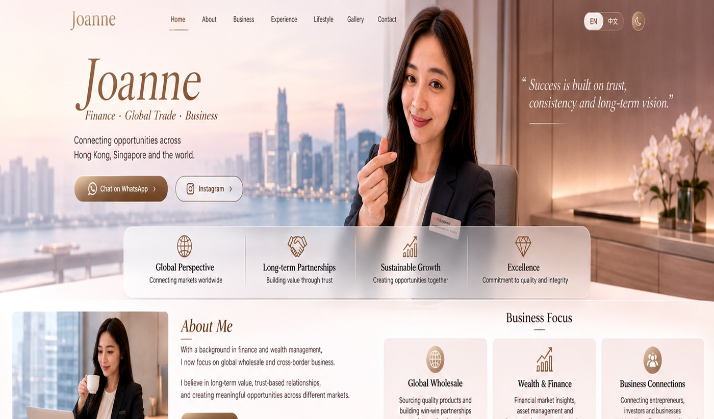

Joanne
连接香港、新加坡与全球市场。以金融与财富管理背景为基础，专注跨境批发、在线业务与长期合作关系。
Connecting Hong Kong, Singapore and global markets. Building on a background in finance and wealth management, with a focus on cross-border wholesale, online business and long-term partnerships.

品牌故事
Brand Story
从金融学习、财富管理到全球贸易，形成跨市场、长期主义与关系导向的商业视角。
From financial education and wealth management to global trade, shaping a cross-market, long-term and relationship-driven business perspective.

Between Hong Kong, Singapore and the world.
城市不同，长期价值、专业判断与真实关系始终不变。
Across different cities, long-term value, professional judgment and meaningful relationships remain constant.
精选内容
Selected Stories
从业务、成长到生活方式，进入不同页面了解更多。
Explore business, growth and lifestyle across the website.
全球贸易与商业连接
Global Trade & Business Connections
了解合作方向、业务重点与跨境机会。
Explore collaboration, business focus and cross-border opportunities.
Journey教育与职业旅程
Education & Career Journey
从 NUS 金融硕士到财富管理与全球业务。
From a Master of Finance at NUS to wealth management and global business.
Lifestyle工作之外
Beyond Business
旅行、运动、阅读、投资与收藏。
Travel, sports, reading, investing and collecting.